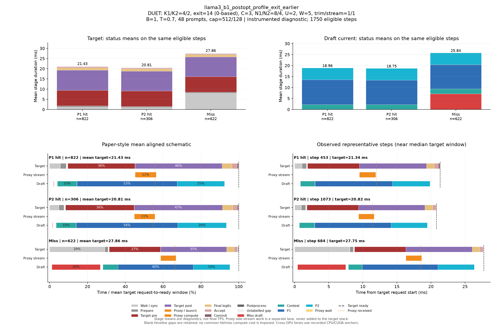

DUET: K1/K2=4/2, exit=14 (0-based), C=3, N1/N2=8/4, U=2, W=5, trim/stream=1/1
| Pass | 용도 | N | B | T | Seed | AL* | Cache hit | TPS* | Raw TPS |
|---|---|---|---|---|---|---|---|---|---|
| 0 | profile-diagnostic | 48 | 1 | 0.7 | 6800 | 2.761 | 64.38% | 103.10 | 102.63 |
Input/output cap: 512/128 · GPUs: 4,5 · draft seed: 0 · source: 641f5ce88ead693790ced9a3261b01241c94e8f4
PNG · 벡터 PDF · 원본 결과 JSON
세부 trace: 1750 eligible steps. Target 원본 · Draft 원본
제외 수: {"initial": 19, "output_boundary": 45, "capture_or_next": 11}
왼쪽 아래는 상태별 평균 정렬 schematic, 오른쪽 아래는 실제 대표 step입니다. %의 분모는 각 상태의 평균 target request→ready 시간이며 phase overlap은 별도 lane에 표시합니다.

{
"args": {
"target": "/data/chokwans99/models/layerskip-llama3-8B",
"draft": "/home/chokwans99/models_mlsys/Qwama-0.5B-Instruct",
"mode": "duet-tree",
"batches": [
1
],
"temperatures": [
0.7
],
"seeds": [
6800
],
"target_tp": 1,
"prompts": "/home/chokwans99/PSD-mlsys-coverage/results/mlsys_coverage/round5/tuning48.json",
"limit": 0,
"max_new_tokens": 128,
"max_model_len": 2048,
"input_cap": 512,
"k1": 4,
"k2": 2,
"draft_fan_out": 2,
"proxy_fan_out": 1,
"p1_tree": true,
"p1_verify_nodes": null,
"p2_verify_nodes": null,
"exit_layer": 14,
"p1_nodes": 8,
"p2_nodes": 4,
"tree_width": 3,
"p1_roots": 2,
"p2_budget": null,
"tree_root_count": null,
"tree_beta": 0.5,
"tree_proxy_threshold": 0.01,
"tree_conf_threshold": 0.03,
"root_source": "complement",
"root_normalization": "full",
"root_overlap_mix": 0.25,
"memory_fraction": 0.45,
"ignore_eos": false,
"greedy_only": false,
"audit_preemption": false,
"ragged_limits": false,
"tree_calibration_dir": null,
"preflight_test": null,
"output": "/home/chokwans99/PSD-mlsys-coverage/results/mlsys_coverage/round5/llama3_postopt_l0_profile/llama3_b1_postopt_profile_exit_earlier.json"
},
"engine_kwargs": {
"num_gpus": 2,
"max_num_seqs": 1,
"max_model_len": 2048,
"max_num_batched_tokens": 2048,
"gpu_memory_utilization": 0.45,
"speculate": true,
"draft_async": true,
"greedy_only": false,
"jit_speculate": true,
"speculate_k": 6,
"async_fan_out": 3,
"duet_p1_tree_policy": "on",
"duet_p2_tree_policy": "on",
"draft": "/home/chokwans99/models_mlsys/Qwama-0.5B-Instruct",
"duet_enabled": true,
"duet_exit_layer": 14,
"duet_phase1_k": 4,
"duet_phase2_k": 2,
"duet_draft_fan_out": 2,
"duet_p2_tree_max_nodes": 4,
"duet_p2_tree_verify_nodes": 4,
"duet_p1_tree_max_nodes": 8,
"duet_p1_tree_verify_nodes": 8,
"duet_tree_c_tensor": 3,
"duet_p1_roots_per_position": 2,
"duet_p2_budget": null,
"duet_tree_root_count": null,
"duet_tree_beta": 0.5,
"duet_tree_proxy_threshold": 0.01,
"duet_tree_conf_threshold": 0.03,
"duet_root_source": "complement",
"duet_root_normalization": "full",
"duet_root_overlap_mix": 0.25
},
"env": {
"CUDA_VISIBLE_DEVICES": "4,5",
"SSD_CUDA_ARCH": "8.9",
"SSD_ATTN_BACKEND": "auto",
"SSD_DIST_PORT": "33602",
"OMP_NUM_THREADS": "4",
"SSD_SEED": "0",
"SSD_CHAIN_PROXY_GRAPH": "1",
"SSD_FAST_VERIFY": "1",
"SSD_BATCHED_PROXY_GRAPH": "1",
"SSD_DUET_EXIT_REPLICA": "0",
"SSD_ASYNC_PROXY_SEND": "1",
"SSD_PROXY_STREAM": "0",
"SSD_BATCHED_TREE": "1",
"SSD_TREE_EXPANSION_POLICY": "reach_gain_frontier",
"SSD_TREE_REACH_CALIBRATION": "/home/chokwans99/PSD-mlsys-coverage/results/mlsys_coverage/round4/calibration/reach.json",
"SSD_TREE_GAIN_CALIBRATION": "/home/chokwans99/PSD-mlsys-coverage/results/mlsys_coverage/round4/calibration/gain.json",
"SSD_DUET_MISS_K": "4",
"SSD_TREE_FUSED_MATH": "1",
"SSD_BATCH_TREE_BULK_EXPORT": "1",
"SSD_TREE_PARALLEL_INSERT": "0",
"SSD_PROFILE_DUET": "1",
"SSD_PROFILE_DUET_MAX_EVENTS": "100000",
"SSD_TREE_SHAPE_METRICS": "1",
"SSD_PROFILE_DIR": "/home/chokwans99/PSD-mlsys-coverage/results/mlsys_coverage/round5/profiles/llama3_b1_postopt_profile_exit_earlier",
"SSD_HF_CACHE": "/data/chokwans99/models",
"SSD_DATASET_DIR": "/home/chokwans99/PSD-mlsys-coverage/results/mlsys_coverage/round5",
"SSD_TREE_LADDER_TRIM": "1",
"SSD_BATCH_TREE_PROXY_STREAM": "1",
"SSD_PROFILE_DUET_DETAIL": "1"
},
"effective_features": {
"fast_verify": true,
"batched_proxy_graph": true,
"exit_replica": false,
"jit_speculate": true,
"duet_jit_short": true,
"miss_depth": 4,
"miss_width": 1,
"tree_fused_math": true,
"tree_parallel_insert": false,
"bulk_export": true
},
"resolved_env": {
"SSD_CUDA_ARCH": "8.9",
"SSD_ATTN_BACKEND": "auto",
"SSD_DIST_PORT": "33602",
"SSD_SEED": "0",
"SSD_CHAIN_PROXY_GRAPH": "1",
"SSD_FAST_VERIFY": "1",
"SSD_BATCHED_PROXY_GRAPH": "1",
"SSD_DUET_EXIT_REPLICA": "0",
"SSD_ASYNC_PROXY_SEND": "1",
"SSD_PROXY_STREAM": "0",
"SSD_BATCHED_TREE": "1",
"SSD_TREE_EXPANSION_POLICY": "reach_gain_frontier",
"SSD_TREE_REACH_CALIBRATION": "/home/chokwans99/PSD-mlsys-coverage/results/mlsys_coverage/round4/calibration/reach.json",
"SSD_TREE_GAIN_CALIBRATION": "/home/chokwans99/PSD-mlsys-coverage/results/mlsys_coverage/round4/calibration/gain.json",
"SSD_DUET_MISS_K": "4",
"SSD_TREE_FUSED_MATH": "1",
"SSD_BATCH_TREE_BULK_EXPORT": "1",
"SSD_TREE_PARALLEL_INSERT": "0",
"SSD_PROFILE_DUET": "1",
"SSD_PROFILE_DUET_MAX_EVENTS": "100000",
"SSD_TREE_SHAPE_METRICS": "1",
"SSD_PROFILE_DIR": "/home/chokwans99/PSD-mlsys-coverage/results/mlsys_coverage/round5/profiles/llama3_b1_postopt_profile_exit_earlier",
"SSD_HF_CACHE": "/data/chokwans99/models",
"SSD_DATASET_DIR": "/home/chokwans99/PSD-mlsys-coverage/results/mlsys_coverage/round5",
"SSD_TREE_LADDER_TRIM": "1",
"SSD_BATCH_TREE_PROXY_STREAM": "1",
"SSD_PROFILE_DUET_DETAIL": "1",
"SSD_FORCE_SPLIT_K1K2": "1",
"SSD_DUET_JIT_SHORT": "1",
"SSD_SHM_NAME": "ssd_3164584"
},
"runtime_source_sha256": {
"ssd/ssd/__init__.py": "f1a221b38f55b42ef0619cba48a411acbbd1965c4845b4643f77443b7ce77950",
"ssd/ssd/config.py": "865ddb5e09ec11f4bc8511dad3f5abad39a6ab412cf0bbcd6213179b5245fa31",
"ssd/ssd/engine/block_manager.py": "05d873619b419d31f47b4be4025bc7c9f11759f5f0bc3f65fbff3a1e8f94660a",
"ssd/ssd/engine/draft_runner.py": "8cb7e22f725de2c0d9c85912ae04f88f1674f34c0cee4b5beccc9a3b5be1c174",
"ssd/ssd/engine/helpers/batch_tree_common.py": "739feeb975c20d0adbdae51735b8983aa6cae8b59d6237b285db0c766d558f27",
"ssd/ssd/engine/helpers/batch_tree_draft.py": "f361030685350183884cc55b9058945515bb00da53fc86541f7902bfd2138528",
"ssd/ssd/engine/helpers/batch_tree_forward.py": "bb51049bd2f47909d455a065dc970330e5ff40cc572ab4d12d760c7188f818f6",
"ssd/ssd/engine/helpers/batch_tree_inputs.py": "c0a05d13ba0e63ecbc920425ddd6a98dc60001d93d73085e75d2d4a9b110a066",
"ssd/ssd/engine/helpers/batch_tree_roots.py": "ad3c4e772392c1043284ac4912d606543f3fd76167135b73e4f72a700e6820c7",
"ssd/ssd/engine/helpers/batch_tree_sampling.py": "ac466b59a1dab2a34e8630db347a2c8d16de3e00a526b258537a82245fbb5006",
"ssd/ssd/engine/helpers/batch_tree_verify.py": "f1258a91f3aea07be44267602808a8075769ee2e1908dad67ff49f7b1bbe811b",
"ssd/ssd/engine/helpers/batched_proxy.py": "6ed4f9b85ff8cf9c24b7ad43a1b7377d08123eeef5307366a373dacda184da86",
"ssd/ssd/engine/helpers/batched_tree_executor.py": "098d64cad2d20d96091631f6bc91da73b1e893ec400c3431a4ed68d007a9ef45",
"ssd/ssd/engine/helpers/cudagraph_helpers.py": "0436aec61d05d0b79696a48665042e364f3f4c50d853b68dc424e435b54be0c9",
"ssd/ssd/engine/helpers/e0_trace.py": "23ecd9bce2587cbef3f99c8894964c0d9642d33d372bd7be4954a5a2840a142e",
"ssd/ssd/engine/helpers/mask_helpers.py": "8ada4e709a6ab310ee920a7176b3684f89860022fc659442f6cb02ed5fb87d88",
"ssd/ssd/engine/helpers/p1_tree.py": "f48ae6b01e593d2598262b34007a6b58dde9e57e94138dde62f81d5526637398",
"ssd/ssd/engine/helpers/p2_tree.py": "73b0a512d834ab3a4608d9cd898b13b32630dd3b914b49e753c1116ac0640b41",
"ssd/ssd/engine/helpers/p2_tree_executor.py": "cfb04f959fd08baf3819a688a907cac4e3071a2727085ea08ca089b50a21e82e",
"ssd/ssd/engine/helpers/packed_tree_forward.py": "b903d6fe4d1fe18f95f6540f488acf40d469154100239429256eace61b1d7e76",
"ssd/ssd/engine/helpers/packed_verify.py": "a50ff24e93324840783b60102bfaeb3786711f05f64bd897708c779535c1820f",
"ssd/ssd/engine/helpers/root_policy.py": "4fd5cc949ee7c63db08060046bea197a62299c31af0a90990294ce39cf13a66e",
"ssd/ssd/engine/helpers/runner_helpers.py": "bfb570d8e018ee296a6c2a8c3c9e75919fd0eb1beb288ceb80121ad116419bf2",
"ssd/ssd/engine/helpers/speculate_types.py": "2929b5f3a176d04b6a4b01f092b224ad733dfda10a647bb73801cd346441ae91",
"ssd/ssd/engine/helpers/tree_expansion_policy.py": "47f818d1b8f284e56813af294723f6a934c3da0502b9ae4e611b54ba6fb85dac",
"ssd/ssd/engine/helpers/tree_fused_math.py": "930a1215363a3b6f878cbc4a71c3f59293f46aa2eab3c4938e5bb51e95868d2e",
"ssd/ssd/engine/helpers/tree_gain_allocation.py": "6f32c6a7b69272c1b42992d95c546bfd3980ccd71af3b3346e9df61977907b6a",
"ssd/ssd/engine/helpers/tree_host_topology.py": "86d0deab4da2932540a108c4c2b3560b8634837e71ba23783375c2001e4cf81c",
"ssd/ssd/engine/helpers/tree_layout.py": "4e5e47c54a4efd5a30ae8c528e1d2d9493d12aa5605c0e65c2f86ba874805be1",
"ssd/ssd/engine/helpers/tree_proxy_stream.py": "05d35738afa93627ba2dd56cd6bf4ca000938a9d02762dac5fde39f5c06009d0",
"ssd/ssd/engine/helpers/tree_rerank_gpu.py": "e4a8bff8828f983d6eb407504f87f2a9edf08a1750449fe46565e661f892b734",
"ssd/ssd/engine/helpers/tree_topology_gpu.py": "3a6cf8796faabbe8adef56deedf8956c1cf252a31e0491f3b71a8544bdcf89af",
"ssd/ssd/engine/llm_engine.py": "b0081876ef6470f91fa562acc0317074a85afa9aec8322182bda7749153db00f",
"ssd/ssd/engine/model_runner.py": "5fa9e910f38538c276a151113fc490be9c75ae9af2bf35ba6eaa5513b237a421",
"ssd/ssd/engine/scheduler.py": "52a36e8bb2abc26f775562a39bd95ea6cc8c70650e6193ddaa0fad762afb8ae4",
"ssd/ssd/engine/sequence.py": "6894715ef142074b118bfa3018b10826d2748518e9c8b71291064eb99fae9bd9",
"ssd/ssd/engine/speculator_async.py": "cd16395d5e5d7380d29f5a27e1495b6a40758c0452ce2cb40d996e2c3271c114",
"ssd/ssd/engine/speculator_sync.py": "30487afa7f5027735ebd752ca1a53003f1d56350f503ea91931ef64e7aab115e",
"ssd/ssd/engine/step.py": "525d3022561c9eee96ec076032bb27e281af744feb739ddc17e52344a9cafe8f",
"ssd/ssd/engine/verifier.py": "f6795547f278628312d2dd5ab0a28e9f34489b8e6d02038566a65fa3190a0928",
"ssd/ssd/layers/activation.py": "13d88b460e7610df28c6a7c719dd8bf21c5c59ae0f85c94d505d499215618a82",
"ssd/ssd/layers/attention.py": "bbafa69d9b52dedf81542f2c3227b7f061de11c679a6681a16b0c137ccfc672b",
"ssd/ssd/layers/embed_head.py": "b896a56b908d75c8f30462b0b1a4ce634276ddb41165fdaa0220c55a2ddf7257",
"ssd/ssd/layers/fi_attn.py": "4b0a275d020c1c3ce37f4e2a6c04bff12577d6f11feec7d79959652300fc9a0c",
"ssd/ssd/layers/layernorm.py": "a076c8d2e31d2597119d8504a69afd8711b41a29b5ccb7e1bf111a6c7277400e",
"ssd/ssd/layers/linear.py": "82c096262013516c5f0a43f7c28f23aa6db6b14f52cbe1ce1dacc5f9d5c4b0b6",
"ssd/ssd/layers/rotary_embedding.py": "1bcca21cf5e4d81c11a5c55d59a6033874c4e6a0003cc4ae8e1aa6165976a723",
"ssd/ssd/layers/sampler.py": "df22591a229ae5c2f62d4797707470ebccb8e55f7064577bc24a656ed797f213",
"ssd/ssd/llm.py": "496950f31428f674b70e8e137e029aa16dd82fdc8d8b8cc76f9ebdce86f7f653",
"ssd/ssd/models/eagle3_draft_llama3.py": "0d6e713a419cf884fc85984f9a2a6de520119032075a7c99158e0df7e2faca84",
"ssd/ssd/models/llama3.py": "ac801bd73e999f04a6fc862ca1d49bc94c88315456cfb6cb1215a503bcc5e07d",
"ssd/ssd/models/qwen2.py": "6804e3662a173368632e5f05b9893cc0cd28a61ac9bd25dbe8cd6f387ca0d1ca",
"ssd/ssd/models/qwen3.py": "535495bf69933fd9c677275453b801189e2c3c78a94fcc5133fc65b88c9f69c7",
"ssd/ssd/paths.py": "72c52420daaf6d457c60235617efc3f8b1e3ae208a35f3bc45438adc9d7e01ac",
"ssd/ssd/quant/__init__.py": "a69f0de0a516ba2bf9e13680b75b8f5d538c2eb281b095662ed1515f8b0f8698",
"ssd/ssd/quant/adapter.py": "fbb1ce4a198a585c31b0102555d1f84d18b09b0de1b90a5808d93ec8ff7ac271",
"ssd/ssd/quant/awq_calibrate.py": "116807eca0a3e4e001aa24a3344031416e4060a6c1b2e39f59829fba09484126",
"ssd/ssd/quant/build.py": "37f9c72ac69af213f2720c86faf380b8a46baaad0b98bf5f2e3c7fa9b3fbc43c",
"ssd/ssd/quant/config.py": "080c327b2297d0905f8fddc8d994aa7b9dc1086d7703d951471d48cea8723a1d",
"ssd/ssd/quant/importer.py": "c8990b69bc9e4e152e7e80b7f08f273c6a4652c1f7e95a8247f85e50030f4f92",
"ssd/ssd/quant/init_context.py": "6aa3dc3f6e95d8902fa7244d0010110b6fcf1ffdccedd6eaa389204339fc214f",
"ssd/ssd/quant/io.py": "f44f98a57351ff1063b7423d2f8390a565a30796fd6c3beaeaa8825f906e66b5",
"ssd/ssd/quant/loader.py": "14f901b1f53a3650be7eff497f626469e2b1fbc487202c639d33c8dd4c9047fb",
"ssd/ssd/quant/marlin.py": "4f1996e9f63d7109e92a3a7ec5350069ba67d7659f2149e99b84ca3c6626b241",
"ssd/ssd/quant/marlin_utils.py": "f64ec8d7ec8260556abd21e229567971a928882f14b93d288a6732d55c12fc90",
"ssd/ssd/quant/naming.py": "7ba73900af5e6d6fa2d1907bd2611625fc72f28a1fb9ea4834cd9a45901632d6",
"ssd/ssd/quant/pack.py": "b7dd683b7cdbfbb6f4ce1e13a51a72240a8dc3a35b7ed652dc664d26bb384711",
"ssd/ssd/quant/state.py": "82cb1050a3b1776765df7ad8f6c59c23a86ac8d1d4cc3c974cded7f8e762f806",
"ssd/ssd/sampling_params.py": "7f79868c4ca115bb18e017411a6c5545f354aa858aa0b8076aafb756d0785032",
"ssd/ssd/utils/async_helpers/async_spec_helpers.py": "0d70779098c5051fcba5d3add5ff0b7896139f1b7789babe701a8df6eaa40f24",
"ssd/ssd/utils/async_helpers/duet_policy.py": "1fb3e1ec1c41a9cda5f531f8c732b09145c7d87ea79d74c331b8176f11f22aaf",
"ssd/ssd/utils/async_helpers/nccl_pack.py": "6330e785f3e81acffe25a82061d3098f7834ad3c2d07bb071d79ed9923b18dc1",
"ssd/ssd/utils/async_helpers/tests.py": "6491ced36a2a6f06d8cf411204b1190d2ca0bc700cd0becf79c3f4cd8abcd87e",
"ssd/ssd/utils/context.py": "ce55eb45f00c91412946dd1c96f5c8f972372dd4c8069770c48e120773f301fc",
"ssd/ssd/utils/int8_debug.py": "9a71dbf2b997a9c8d9b776cc3659c8dbf32ce5411eb5cedb4a73368cee60d3d7",
"ssd/ssd/utils/loader.py": "c008eac34810772e8d9f51da896c00867481f3e1a0e6f725e0d06599c0aab59e",
"ssd/ssd/utils/misc.py": "1084b630f174d651b78b01c4ba2dff147f18d3cf52a200704b4b9eab2b72b66c",
"ssd/ssd/utils/quantize.py": "c0ee73d55f3781eba88007325d5e9e53e66ad952e0e8f19143aa8c50bc39f406",
"ssd/ssd/utils/verify.py": "0cf11b9ba19a73e9c39087fccde43071464c6f3b964e00081ebadc747ef142a4",
"ssd/ssd/utils/verify_fast.py": "23b05b7e5032fe72c8f2ef5bd7a69aa874818b08b52ea7fc0344a54c76ea28d9",
"ssd/bench/mlsys_campaign.py": "059b6316ba33e867e1fcf099a8180c186fa70b916692eca386d2a4a347b0f26f",
"ssd/bench/mlsys_coverage.py": "70b2afaf05bbbd5760c2a4f96f801976479209ca1d7a8f9eb8598139e686bdbc",
"ssd/bench/mlsys_greedy_audit.py": "b9815fd03ded7f30f7c0408629782156e73f5ceaab9f0b3b720956f5c00da141",
"ssd/bench/mlsys_preemption_audit.py": "f891ff5a69a59fb8c93e7952f9d48ac16adb7fef074763089f14d4505ecad80d",
"ssd/bench/mlsys_summarize.py": "0235aa2b56eb59c41c429351d77e90e16c52ccdf58c43e3578dd03df0f6095bd",
"ssd/bench/mlsys_tree_observer.py": "8c18248c9ef1953e2e821613099f14d155978540536939288d4fb2aa897c6263",
"ssd/bench/mlsys_verify_bench.py": "3ddc36197874d239f41a1c135570d4d7a0940d615d3d396299bae46e377bce2e"
}
}{
"groups": [
{
"status": "P1 hit",
"n": 822,
"mean_target_ms": 21.428698484915017,
"mean_decode_ms": 21.46815965229695,
"mean_intervals": [
{
"lane": "Draft current",
"label": "Context",
"start": 0.8652214641408619,
"end": 3.068170633339244
},
{
"lane": "Draft current",
"label": "Miss draft",
"start": 0.4275991261150425,
"end": 0.466362793080128
},
{
"lane": "Draft current",
"label": "P1",
"start": 3.0877790842613164,
"end": 14.437592810667924
},
{
"lane": "Draft current",
"label": "P2",
"start": 14.442765498973447,
"end": 19.814259612067193
},
{
"lane": "Draft current",
"label": "Proxy wait",
"start": 14.439291113194468,
"end": 14.441033939085447
},
{
"lane": "Proxy stream",
"label": "Proxy compute",
"start": 9.67160412255865,
"end": 12.063645292372598
},
{
"lane": "Target",
"label": "Accept",
"start": 20.645012427710558,
"end": 21.234521721981448
},
{
"lane": "Target",
"label": "Commit",
"start": 21.245849026090617,
"end": 21.385569929206458
},
{
"lane": "Target",
"label": "Final logits",
"start": 19.52540666807597,
"end": 20.64320838509395
},
{
"lane": "Target",
"label": "Postprocess",
"start": 21.41244264211678,
"end": 21.428698484915017
},
{
"lane": "Target",
"label": "Prepare",
"start": 1.1967078345825493,
"end": 1.8683969408926302
},
{
"lane": "Target",
"label": "Proxy / launch",
"start": 9.660983139871101,
"end": 9.668222998760623
},
{
"lane": "Target",
"label": "Target post",
"start": 9.67009531755517,
"end": 19.52349691408394
},
{
"lane": "Target",
"label": "Target pre",
"start": 2.0436857361573084,
"end": 9.659188010396749
},
{
"lane": "Target",
"label": "Wait / sync",
"start": 0.0,
"end": 1.1748290569532818
}
],
"components": [
{
"lane": "Draft current",
"label": "Context",
"mean_ms": 2.202949169198382,
"present_steps": 822,
"population": 822
},
{
"lane": "Draft current",
"label": "Miss draft",
"mean_ms": 0.038763666965085514,
"present_steps": 822,
"population": 822
},
{
"lane": "Draft current",
"label": "P1",
"mean_ms": 11.349813726406607,
"present_steps": 822,
"population": 822
},
{
"lane": "Draft current",
"label": "P2",
"mean_ms": 5.371494113093745,
"present_steps": 822,
"population": 822
},
{
"lane": "Draft current",
"label": "Proxy wait",
"mean_ms": 0.0017428258909796277,
"present_steps": 822,
"population": 822
},
{
"lane": "Proxy stream",
"label": "Proxy compute",
"mean_ms": 2.39204116981395,
"present_steps": 822,
"population": 822
},
{
"lane": "Target",
"label": "Accept",
"mean_ms": 0.589509294270889,
"present_steps": 822,
"population": 822
},
{
"lane": "Target",
"label": "Commit",
"mean_ms": 0.139720903115841,
"present_steps": 822,
"population": 822
},
{
"lane": "Target",
"label": "Final logits",
"mean_ms": 1.117801717017979,
"present_steps": 822,
"population": 822
},
{
"lane": "Target",
"label": "Postprocess",
"mean_ms": 0.016255842798237673,
"present_steps": 822,
"population": 822
},
{
"lane": "Target",
"label": "Prepare",
"mean_ms": 0.671689106310081,
"present_steps": 822,
"population": 822
},
{
"lane": "Target",
"label": "Proxy / launch",
"mean_ms": 0.007239858889521764,
"present_steps": 822,
"population": 822
},
{
"lane": "Target",
"label": "Target post",
"mean_ms": 9.853401596528771,
"present_steps": 822,
"population": 822
},
{
"lane": "Target",
"label": "Target pre",
"mean_ms": 7.61550227423944,
"present_steps": 822,
"population": 822
},
{
"lane": "Target",
"label": "Unlabelled gap",
"mean_ms": 0.24274883479097464,
"present_steps": 822,
"population": 822
},
{
"lane": "Target",
"label": "Wait / sync",
"mean_ms": 1.1748290569532818,
"present_steps": 822,
"population": 822
}
],
"mean_markers": {
"Final logits": 20.64320838509395,
"Target ready": 21.428698484915017,
"Proxy received": 11.953424530887835
},
"representative": {
"step_id": 453,
"status": "P1 hit",
"target_ms": 21.34179711341858,
"decode_ms": 21.37942798435688,
"source_counts": {
"1": 1
},
"physical_queries": 9,
"max_valid_nodes": 8,
"unlabelled_target_ms": 0.2324221134185791,
"intervals": [
{
"label": "Wait / sync",
"start": 0.0,
"end": 1.0566411018371582,
"lane": "Target",
"original_label": "target_spec_wait"
},
{
"label": "Prepare",
"start": 1.076172113418579,
"end": 1.705078125,
"lane": "Target",
"original_label": "batch_tree_prepare"
},
{
"label": "Target pre",
"start": 1.8652350902557373,
"end": 9.472657203674316,
"lane": "Target",
"original_label": "batch_target_pre"
},
{
"label": "Proxy / launch",
"start": 9.474610090255737,
"end": 9.480468988418579,
"lane": "Target",
"original_label": "batch_target_proxy"
},
{
"label": "Target post",
"start": 9.482422113418579,
"end": 19.328125,
"lane": "Target",
"original_label": "batch_target_post"
},
{
"label": "Final logits",
"start": 19.330078125,
"end": 20.45117211341858,
"lane": "Target",
"original_label": "batch_target_final_logits"
},
{
"label": "Accept",
"start": 20.453125,
"end": 21.070313215255737,
"lane": "Target",
"original_label": "batch_tree_accept"
},
{
"label": "Commit",
"start": 21.082032203674316,
"end": 21.29296898841858,
"lane": "Target",
"original_label": "batch_tree_commit"
},
{
"label": "Postprocess",
"start": 21.32617211341858,
"end": 21.34179711341858,
"lane": "Target",
"original_label": "target_postprocess"
},
{
"label": "Unlabelled gap",
"start": 1.0566411018371582,
"end": 1.076172113418579,
"lane": "Target",
"original_label": "derived_gap"
},
{
"label": "Unlabelled gap",
"start": 1.705078125,
"end": 1.8652350902557373,
"lane": "Target",
"original_label": "derived_gap"
},
{
"label": "Unlabelled gap",
"start": 9.472657203674316,
"end": 9.474610090255737,
"lane": "Target",
"original_label": "derived_gap"
},
{
"label": "Unlabelled gap",
"start": 9.480468988418579,
"end": 9.482422113418579,
"lane": "Target",
"original_label": "derived_gap"
},
{
"label": "Unlabelled gap",
"start": 19.328125,
"end": 19.330078125,
"lane": "Target",
"original_label": "derived_gap"
},
{
"label": "Unlabelled gap",
"start": 20.45117211341858,
"end": 20.453125,
"lane": "Target",
"original_label": "derived_gap"
},
{
"label": "Unlabelled gap",
"start": 21.070313215255737,
"end": 21.082032203674316,
"lane": "Target",
"original_label": "derived_gap"
},
{
"label": "Unlabelled gap",
"start": 21.29296898841858,
"end": 21.32617211341858,
"lane": "Target",
"original_label": "derived_gap"
},
{
"label": "Proxy compute",
"start": 9.484375,
"end": 11.888672113418579,
"lane": "Proxy stream",
"original_label": "batch_proxy_side"
},
{
"label": "Miss draft",
"start": 0.3983500003814697,
"end": 0.4315531253814697,
"lane": "Draft current",
"original_label": "batch_miss_draft"
},
{
"label": "Context",
"start": 0.8260841369628906,
"end": 2.968663215637207,
"lane": "Draft current",
"original_label": "batch_glue"
},
{
"label": "P1",
"start": 2.990147113800049,
"end": 14.328038215637207,
"lane": "Draft current",
"original_label": "batch_p1_total"
},
{
"label": "Proxy wait",
"start": 14.329991102218628,
"end": 14.331943988800049,
"lane": "Draft current",
"original_label": "batch_proxy_wait"
},
{
"label": "P2",
"start": 14.333897113800049,
"end": 19.84756898880005,
"lane": "Draft current",
"original_label": "batch_p2_total"
}
],
"previous": [],
"markers": {
"Target ready": 21.34179711341858,
"Final logits": 20.45117211341858,
"Proxy received": 12.00772500038147
}
},
"step_ids": [
21,
23,
24,
25,
27,
29,
32,
34,
35,
36,
38,
41,
42,
43,
44,
49,
50,
53,
56,
57,
59,
60,
61,
62,
63,
67,
68,
69,
70,
71,
72,
74,
75,
77,
78,
79,
80,
81,
82,
83,
84,
87,
88,
89,
90,
93,
99,
100,
102,
105,
106,
107,
108,
109,
110,
111,
112,
113,
116,
117,
118,
122,
123,
124,
128,
133,
134,
135,
136,
137,
142,
145,
147,
148,
149,
153,
155,
156,
157,
158,
159,
161,
162,
164,
165,
168,
169,
170,
176,
177,
178,
179,
183,
184,
185,
188,
189,
190,
191,
192,
193,
195,
196,
197,
198,
199,
200,
202,
203,
206,
207,
209,
211,
212,
217,
219,
222,
227,
228,
233,
241,
242,
245,
246,
247,
252,
259,
261,
264,
265,
268,
269,
273,
274,
275,
279,
280,
281,
282,
283,
284,
285,
286,
287,
288,
290,
291,
294,
296,
297,
301,
304,
305,
309,
310,
311,
312,
317,
321,
322,
323,
324,
325,
327,
329,
332,
334,
338,
339,
340,
341,
342,
343,
345,
350,
353,
354,
355,
356,
358,
361,
363,
367,
370,
376,
377,
385,
386,
389,
393,
398,
402,
405,
408,
410,
415,
418,
422,
427,
428,
429,
430,
431,
432,
433,
434,
435,
436,
437,
441,
443,
444,
445,
446,
449,
451,
452,
453,
456,
457,
460,
461,
462,
464,
465,
466,
467,
468,
469,
471,
472,
473,
474,
491,
492,
494,
498,
502,
504,
506,
507,
508,
509,
511,
513,
514,
515,
516,
518,
519,
523,
524,
525,
527,
534,
535,
539,
541,
545,
548,
549,
550,
553,
556,
559,
560,
562,
570,
572,
573,
574,
576,
577,
578,
582,
586,
588,
589,
590,
592,
594,
595,
599,
601,
602,
605,
606,
607,
610,
613,
614,
616,
617,
618,
621,
623,
627,
632,
635,
637,
640,
643,
644,
656,
659,
662,
663,
664,
665,
666,
669,
671,
672,
676,
677,
680,
681,
682,
683,
687,
689,
690,
692,
693,
696,
701,
705,
706,
707,
712,
714,
715,
716,
721,
734,
735,
736,
737,
739,
747,
749,
751,
752,
755,
757,
758,
761,
763,
766,
774,
775,
778,
783,
786,
788,
789,
790,
792,
794,
800,
801,
802,
803,
804,
805,
811,
813,
814,
815,
818,
821,
822,
824,
828,
829,
836,
838,
839,
840,
842,
845,
846,
849,
850,
851,
852,
853,
855,
857,
859,
876,
877,
881,
882,
883,
890,
892,
893,
894,
897,
899,
904,
905,
907,
909,
912,
914,
915,
918,
921,
922,
923,
924,
925,
926,
927,
928,
929,
930,
931,
932,
933,
934,
935,
939,
941,
942,
945,
949,
950,
954,
956,
959,
960,
962,
965,
966,
967,
968,
974,
976,
978,
981,
983,
995,
996,
997,
998,
999,
1000,
1002,
1004,
1008,
1009,
1015,
1016,
1019,
1020,
1022,
1023,
1025,
1026,
1027,
1033,
1036,
1037,
1040,
1041,
1042,
1045,
1046,
1047,
1048,
1049,
1050,
1051,
1055,
1058,
1059,
1060,
1061,
1063,
1067,
1069,
1071,
1081,
1083,
1089,
1091,
1092,
1093,
1098,
1101,
1105,
1107,
1110,
1112,
1116,
1118,
1125,
1127,
1129,
1131,
1132,
1137,
1141,
1142,
1144,
1149,
1151,
1153,
1156,
1157,
1158,
1161,
1163,
1164,
1165,
1166,
1168,
1171,
1175,
1176,
1180,
1198,
1207,
1213,
1219,
1220,
1221,
1222,
1223,
1224,
1225,
1231,
1232,
1235,
1240,
1243,
1245,
1247,
1250,
1251,
1253,
1254,
1255,
1256,
1261,
1264,
1265,
1266,
1268,
1269,
1270,
1272,
1273,
1274,
1275,
1277,
1278,
1279,
1280,
1282,
1283,
1286,
1291,
1293,
1294,
1297,
1298,
1304,
1307,
1308,
1309,
1311,
1312,
1313,
1314,
1315,
1316,
1317,
1318,
1319,
1320,
1321,
1322,
1323,
1324,
1325,
1328,
1329,
1334,
1336,
1337,
1340,
1341,
1343,
1344,
1346,
1348,
1349,
1351,
1353,
1355,
1356,
1357,
1358,
1359,
1361,
1362,
1368,
1373,
1374,
1375,
1376,
1377,
1378,
1379,
1381,
1383,
1384,
1386,
1387,
1388,
1389,
1390,
1391,
1392,
1393,
1394,
1395,
1396,
1397,
1398,
1399,
1404,
1405,
1406,
1411,
1413,
1414,
1415,
1416,
1422,
1424,
1427,
1428,
1430,
1432,
1433,
1434,
1436,
1437,
1441,
1452,
1453,
1454,
1455,
1457,
1461,
1462,
1465,
1471,
1472,
1475,
1477,
1481,
1482,
1483,
1485,
1486,
1488,
1491,
1496,
1497,
1499,
1505,
1508,
1509,
1512,
1515,
1516,
1523,
1525,
1533,
1534,
1535,
1539,
1540,
1541,
1542,
1545,
1546,
1548,
1549,
1550,
1551,
1553,
1556,
1559,
1562,
1564,
1566,
1572,
1575,
1576,
1582,
1584,
1585,
1588,
1589,
1591,
1592,
1595,
1596,
1597,
1598,
1601,
1602,
1609,
1610,
1611,
1613,
1614,
1615,
1616,
1618,
1619,
1622,
1625,
1626,
1628,
1631,
1632,
1633,
1635,
1636,
1642,
1645,
1649,
1652,
1656,
1666,
1667,
1668,
1678,
1679,
1680,
1681,
1682,
1692,
1695,
1702,
1714,
1715,
1716,
1717,
1718,
1719,
1720,
1721,
1722,
1726,
1727,
1729,
1731,
1732,
1733,
1734,
1735,
1737,
1739,
1740,
1741,
1742,
1743,
1744,
1747,
1749,
1750,
1751,
1754,
1756,
1757,
1761,
1763,
1765,
1767,
1774,
1776,
1777,
1779,
1781,
1782,
1790,
1792,
1794,
1795,
1799,
1800,
1802,
1803,
1804,
1805,
1806,
1807,
1808,
1809,
1810,
1811,
1812,
1813,
1814,
1815,
1816,
1817,
1818,
1819,
1820,
1821,
1822,
1824
],
"query_shapes": {
"9": 771,
"5": 51
}
},
{
"status": "P2 hit",
"n": 306,
"mean_target_ms": 20.813297856866924,
"mean_decode_ms": 20.853089201385824,
"mean_intervals": [
{
"lane": "Draft current",
"label": "Context",
"start": 0.7146554367215026,
"end": 2.897941204457501
},
{
"lane": "Draft current",
"label": "Miss draft",
"start": 0.2929256367527582,
"end": 0.3308711527219785
},
{
"lane": "Draft current",
"label": "P1",
"start": 2.91753150435055,
"end": 14.089005996199216
},
{
"lane": "Draft current",
"label": "P2",
"start": 14.094176058675728,
"end": 19.44536195471396
},
{
"lane": "Draft current",
"label": "Proxy wait",
"start": 14.090715000052857,
"end": 14.092380873518053
},
{
"lane": "Proxy stream",
"label": "Proxy compute",
"start": 9.305731076041079,
"end": 11.569798662771586
},
{
"lane": "Target",
"label": "Accept",
"start": 20.133409278844695,
"end": 20.65042888884451
},
{
"lane": "Target",
"label": "Commit",
"start": 20.661654621167898,
"end": 20.77149553859935
},
{
"lane": "Target",
"label": "Final logits",
"start": 19.01988869087369,
"end": 20.13168911762487
},
{
"lane": "Target",
"label": "Postprocess",
"start": 20.797380847089432,
"end": 20.813297856866924
},
{
"lane": "Target",
"label": "Prepare",
"start": 1.0100560889524572,
"end": 1.563428669193991
},
{
"lane": "Target",
"label": "Proxy / launch",
"start": 9.29540701005973,
"end": 9.302630620065079
},
{
"lane": "Target",
"label": "Target post",
"start": 9.304612457362655,
"end": 19.01809989548976
},
{
"lane": "Target",
"label": "Target pre",
"start": 1.7324154953551447,
"end": 9.293581512239244
},
{
"lane": "Target",
"label": "Wait / sync",
"start": 0.0,
"end": 0.9872887391670078
}
],
"components": [
{
"lane": "Draft current",
"label": "Context",
"mean_ms": 2.1832857677359985,
"present_steps": 306,
"population": 306
},
{
"lane": "Draft current",
"label": "Miss draft",
"mean_ms": 0.03794551596922033,
"present_steps": 306,
"population": 306
},
{
"lane": "Draft current",
"label": "P1",
"mean_ms": 11.171474491848665,
"present_steps": 306,
"population": 306
},
{
"lane": "Draft current",
"label": "P2",
"mean_ms": 5.35118589603823,
"present_steps": 306,
"population": 306
},
{
"lane": "Draft current",
"label": "Proxy wait",
"mean_ms": 0.0016658734651952007,
"present_steps": 306,
"population": 306
},
{
"lane": "Proxy stream",
"label": "Proxy compute",
"mean_ms": 2.2640675867305085,
"present_steps": 306,
"population": 306
},
{
"lane": "Target",
"label": "Accept",
"mean_ms": 0.5170196099998126,
"present_steps": 306,
"population": 306
},
{
"lane": "Target",
"label": "Commit",
"mean_ms": 0.10984091743145113,
"present_steps": 306,
"population": 306
},
{
"lane": "Target",
"label": "Final logits",
"mean_ms": 1.1118004267511805,
"present_steps": 306,
"population": 306
},
{
"lane": "Target",
"label": "Postprocess",
"mean_ms": 0.015917009777492948,
"present_steps": 306,
"population": 306
},
{
"lane": "Target",
"label": "Prepare",
"mean_ms": 0.5533725802415337,
"present_steps": 306,
"population": 306
},
{
"lane": "Target",
"label": "Proxy / launch",
"mean_ms": 0.007223610005347558,
"present_steps": 306,
"population": 306
},
{
"lane": "Target",
"label": "Target post",
"mean_ms": 9.713487438127107,
"present_steps": 306,
"population": 306
},
{
"lane": "Target",
"label": "Target pre",
"mean_ms": 7.5611660168840995,
"present_steps": 306,
"population": 306
},
{
"lane": "Target",
"label": "Unlabelled gap",
"mean_ms": 0.2361815084818921,
"present_steps": 306,
"population": 306
},
{
"lane": "Target",
"label": "Wait / sync",
"mean_ms": 0.9872887391670078,
"present_steps": 306,
"population": 306
}
],
"mean_markers": {
"Final logits": 20.13168911762487,
"Target ready": 20.813297856866924,
"Proxy received": 11.410022215905533
},
"representative": {
"step_id": 1073,
"status": "P2 hit",
"target_ms": 20.81640601158142,
"decode_ms": 20.85815090686083,
"source_counts": {
"2": 1
},
"physical_queries": 5,
"max_valid_nodes": 4,
"unlabelled_target_ms": 0.2656261920928955,
"intervals": [
{
"label": "Wait / sync",
"start": 0.0,
"end": 0.96875,
"lane": "Target",
"original_label": "target_spec_wait"
},
{
"label": "Prepare",
"start": 0.9921882152557373,
"end": 1.578125,
"lane": "Target",
"original_label": "batch_tree_prepare"
},
{
"label": "Target pre",
"start": 1.7773442268371582,
"end": 9.363281011581421,
"lane": "Target",
"original_label": "batch_target_pre"
},
{
"label": "Proxy / launch",
"start": 9.367188215255737,
"end": 9.371094226837158,
"lane": "Target",
"original_label": "batch_target_proxy"
},
{
"label": "Target post",
"start": 9.375,
"end": 19.109375,
"lane": "Target",
"original_label": "batch_target_post"
},
{
"label": "Final logits",
"start": 19.109375,
"end": 20.22265601158142,
"lane": "Target",
"original_label": "batch_target_final_logits"
},
{
"label": "Accept",
"start": 20.22265601158142,
"end": 20.730469226837158,
"lane": "Target",
"original_label": "batch_tree_accept"
},
{
"label": "Commit",
"start": 20.742188215255737,
"end": 20.777344226837158,
"lane": "Target",
"original_label": "batch_tree_commit"
},
{
"label": "Postprocess",
"start": 20.80078101158142,
"end": 20.81640601158142,
"lane": "Target",
"original_label": "target_postprocess"
},
{
"label": "Unlabelled gap",
"start": 0.96875,
"end": 0.9921882152557373,
"lane": "Target",
"original_label": "derived_gap"
},
{
"label": "Unlabelled gap",
"start": 1.578125,
"end": 1.7773442268371582,
"lane": "Target",
"original_label": "derived_gap"
},
{
"label": "Unlabelled gap",
"start": 9.363281011581421,
"end": 9.367188215255737,
"lane": "Target",
"original_label": "derived_gap"
},
{
"label": "Unlabelled gap",
"start": 9.371094226837158,
"end": 9.375,
"lane": "Target",
"original_label": "derived_gap"
},
{
"label": "Unlabelled gap",
"start": 20.730469226837158,
"end": 20.742188215255737,
"lane": "Target",
"original_label": "derived_gap"
},
{
"label": "Unlabelled gap",
"start": 20.777344226837158,
"end": 20.80078101158142,
"lane": "Target",
"original_label": "derived_gap"
},
{
"label": "Proxy compute",
"start": 9.375,
"end": 11.648438215255737,
"lane": "Proxy stream",
"original_label": "batch_proxy_side"
},
{
"label": "Miss draft",
"start": 0.2616310119628906,
"end": 0.2967870235443115,
"lane": "Draft current",
"original_label": "batch_miss_draft"
},
{
"label": "Context",
"start": 0.6756942272186279,
"end": 2.9061620235443115,
"lane": "Draft current",
"original_label": "batch_glue"
},
{
"label": "P1",
"start": 2.925694227218628,
"end": 14.128819227218628,
"lane": "Draft current",
"original_label": "batch_p1_total"
},
{
"label": "Proxy wait",
"start": 14.13272500038147,
"end": 14.13272500038147,
"lane": "Draft current",
"original_label": "batch_proxy_wait"
},
{
"label": "P2",
"start": 14.13272500038147,
"end": 19.45303702354431,
"lane": "Draft current",
"original_label": "batch_p2_total"
}
],
"previous": [],
"markers": {
"Target ready": 20.81640601158142,
"Final logits": 20.22265601158142,
"Proxy received": 11.46085000038147
}
},
"step_ids": [
30,
39,
40,
48,
58,
66,
96,
97,
98,
104,
129,
130,
138,
139,
140,
141,
152,
160,
172,
173,
180,
210,
223,
224,
226,
229,
251,
260,
271,
272,
277,
278,
298,
303,
307,
314,
315,
318,
320,
326,
330,
331,
344,
352,
357,
365,
368,
369,
371,
372,
373,
379,
382,
384,
387,
390,
397,
401,
404,
407,
411,
412,
423,
425,
426,
440,
448,
458,
459,
463,
479,
480,
488,
493,
497,
501,
510,
512,
521,
540,
546,
551,
557,
564,
567,
569,
571,
580,
596,
598,
604,
622,
633,
638,
642,
645,
649,
657,
660,
668,
674,
685,
691,
694,
700,
703,
710,
718,
719,
744,
754,
756,
760,
764,
776,
777,
781,
784,
796,
797,
808,
810,
823,
826,
827,
831,
832,
837,
848,
854,
856,
858,
861,
866,
867,
868,
869,
872,
884,
889,
891,
900,
906,
910,
911,
947,
951,
953,
955,
964,
977,
1007,
1013,
1018,
1029,
1032,
1035,
1044,
1053,
1054,
1057,
1065,
1073,
1075,
1076,
1077,
1080,
1082,
1084,
1090,
1096,
1097,
1100,
1102,
1103,
1111,
1114,
1117,
1120,
1123,
1124,
1126,
1130,
1133,
1138,
1139,
1140,
1145,
1152,
1155,
1160,
1162,
1172,
1173,
1178,
1182,
1191,
1193,
1195,
1200,
1201,
1203,
1210,
1216,
1217,
1228,
1229,
1230,
1233,
1236,
1239,
1257,
1271,
1276,
1284,
1287,
1295,
1300,
1310,
1345,
1347,
1350,
1352,
1360,
1365,
1367,
1372,
1380,
1385,
1403,
1407,
1408,
1409,
1412,
1419,
1423,
1435,
1438,
1439,
1444,
1446,
1448,
1456,
1458,
1459,
1464,
1467,
1468,
1469,
1474,
1479,
1480,
1489,
1490,
1492,
1495,
1507,
1519,
1522,
1524,
1526,
1527,
1528,
1537,
1538,
1544,
1547,
1569,
1570,
1573,
1579,
1586,
1587,
1590,
1593,
1594,
1603,
1604,
1621,
1624,
1627,
1639,
1641,
1648,
1651,
1653,
1654,
1663,
1671,
1683,
1685,
1688,
1696,
1697,
1699,
1700,
1703,
1736,
1752,
1755,
1764,
1768,
1771,
1783,
1784,
1823
],
"query_shapes": {
"5": 306
}
},
{
"status": "Miss",
"n": 622,
"mean_target_ms": 27.859173243452116,
"mean_decode_ms": 27.902400081414264,
"mean_intervals": [
{
"lane": "Draft current",
"label": "Context",
"start": 7.8191814135125215,
"end": 10.056996368135287
},
{
"lane": "Draft current",
"label": "Miss draft",
"start": 0.30719655081390185,
"end": 7.4476488437683255
},
{
"lane": "Draft current",
"label": "P1",
"start": 10.05906567082911,
"end": 21.159044015062584
},
{
"lane": "Draft current",
"label": "P2",
"start": 21.16429502327726,
"end": 26.523831687556203
},
{
"lane": "Draft current",
"label": "Proxy wait",
"start": 21.160847209274195,
"end": 21.162491813349956
},
{
"lane": "Proxy stream",
"label": "Proxy compute",
"start": 16.336023810592113,
"end": 18.601545215802943
},
{
"lane": "Target",
"label": "Accept",
"start": 27.16902771640054,
"end": 27.68760049458102
},
{
"lane": "Target",
"label": "Commit",
"start": 27.698961224203323,
"end": 27.72755242122331
},
{
"lane": "Target",
"label": "Final logits",
"start": 26.055511749442367,
"end": 27.167188430522415
},
{
"lane": "Target",
"label": "Postprocess",
"start": 27.751981369935432,
"end": 27.859173243452116
},
{
"lane": "Target",
"label": "Prepare",
"start": 8.0951269186578,
"end": 8.579270334489092
},
{
"lane": "Target",
"label": "Proxy / launch",
"start": 16.325617644181204,
"end": 16.332870417085875
},
{
"lane": "Target",
"label": "Target post",
"start": 16.33489968577382,
"end": 26.05363318429499
},
{
"lane": "Target",
"label": "Target pre",
"start": 8.757409762722887,
"end": 16.323802688497437
},
{
"lane": "Target",
"label": "Wait / sync",
"start": 0.0,
"end": 8.071416986333595
}
],
"components": [
{
"lane": "Draft current",
"label": "Context",
"mean_ms": 2.2378149546227655,
"present_steps": 622,
"population": 622
},
{
"lane": "Draft current",
"label": "Miss draft",
"mean_ms": 7.140452292954423,
"present_steps": 622,
"population": 622
},
{
"lane": "Draft current",
"label": "P1",
"mean_ms": 11.099978344233474,
"present_steps": 622,
"population": 622
},
{
"lane": "Draft current",
"label": "P2",
"mean_ms": 5.359536664278944,
"present_steps": 622,
"population": 622
},
{
"lane": "Draft current",
"label": "Proxy wait",
"mean_ms": 0.0016446040757599368,
"present_steps": 622,
"population": 622
},
{
"lane": "Proxy stream",
"label": "Proxy compute",
"mean_ms": 2.265521405210832,
"present_steps": 622,
"population": 622
},
{
"lane": "Target",
"label": "Accept",
"mean_ms": 0.5185727781804812,
"present_steps": 622,
"population": 622
},
{
"lane": "Target",
"label": "Commit",
"mean_ms": 0.028591197019987934,
"present_steps": 622,
"population": 622
},
{
"lane": "Target",
"label": "Final logits",
"mean_ms": 1.1116766810800485,
"present_steps": 622,
"population": 622
},
{
"lane": "Target",
"label": "Postprocess",
"mean_ms": 0.1071918735166838,
"present_steps": 622,
"population": 622
},
{
"lane": "Target",
"label": "Prepare",
"mean_ms": 0.48414341583129294,
"present_steps": 622,
"population": 622
},
{
"lane": "Target",
"label": "Proxy / launch",
"mean_ms": 0.007252772904668974,
"present_steps": 622,
"population": 622
},
{
"lane": "Target",
"label": "Target post",
"mean_ms": 9.718733498521173,
"present_steps": 622,
"population": 622
},
{
"lane": "Target",
"label": "Target pre",
"mean_ms": 7.566392925774553,
"present_steps": 622,
"population": 622
},
{
"lane": "Target",
"label": "Unlabelled gap",
"mean_ms": 0.24520111428963026,
"present_steps": 622,
"population": 622
},
{
"lane": "Target",
"label": "Wait / sync",
"mean_ms": 8.071416986333595,
"present_steps": 622,
"population": 622
}
],
"mean_markers": {
"Final logits": 27.167188430522415,
"Target ready": 27.859173243452116,
"Proxy received": 18.44666679150805
},
"representative": {
"step_id": 684,
"status": "Miss",
"target_ms": 27.75,
"decode_ms": 27.79094409197569,
"source_counts": {
"0": 1
},
"physical_queries": 5,
"max_valid_nodes": 4,
"unlabelled_target_ms": 0.2441420555114746,
"intervals": [
{
"label": "Wait / sync",
"start": 0.0,
"end": 8.056639909744263,
"lane": "Target",
"original_label": "target_spec_wait"
},
{
"label": "Prepare",
"start": 8.082030773162842,
"end": 8.576171875,
"lane": "Target",
"original_label": "batch_tree_prepare"
},
{
"label": "Target pre",
"start": 8.753905773162842,
"end": 16.30859398841858,
"lane": "Target",
"original_label": "batch_target_pre"
},
{
"label": "Proxy / launch",
"start": 16.310546875,
"end": 16.316405773162842,
"lane": "Target",
"original_label": "batch_target_proxy"
},
{
"label": "Target post",
"start": 16.318358898162842,
"end": 26.041014909744263,
"lane": "Target",
"original_label": "batch_target_post"
},
{
"label": "Final logits",
"start": 26.04296898841858,
"end": 27.154296875,
"lane": "Target",
"original_label": "batch_target_final_logits"
},
{
"label": "Accept",
"start": 27.15625,
"end": 27.67382788658142,
"lane": "Target",
"original_label": "batch_tree_accept"
},
{
"label": "Commit",
"start": 27.68359398841858,
"end": 27.712889909744263,
"lane": "Target",
"original_label": "batch_tree_commit"
},
{
"label": "Postprocess",
"start": 27.73632788658142,
"end": 27.75,
"lane": "Target",
"original_label": "target_postprocess"
},
{
"label": "Unlabelled gap",
"start": 8.056639909744263,
"end": 8.082030773162842,
"lane": "Target",
"original_label": "derived_gap"
},
{
"label": "Unlabelled gap",
"start": 8.576171875,
"end": 8.753905773162842,
"lane": "Target",
"original_label": "derived_gap"
},
{
"label": "Unlabelled gap",
"start": 16.30859398841858,
"end": 16.310546875,
"lane": "Target",
"original_label": "derived_gap"
},
{
"label": "Unlabelled gap",
"start": 16.316405773162842,
"end": 16.318358898162842,
"lane": "Target",
"original_label": "derived_gap"
},
{
"label": "Unlabelled gap",
"start": 26.041014909744263,
"end": 26.04296898841858,
"lane": "Target",
"original_label": "derived_gap"
},
{
"label": "Unlabelled gap",
"start": 27.154296875,
"end": 27.15625,
"lane": "Target",
"original_label": "derived_gap"
},
{
"label": "Unlabelled gap",
"start": 27.67382788658142,
"end": 27.68359398841858,
"lane": "Target",
"original_label": "derived_gap"
},
{
"label": "Unlabelled gap",
"start": 27.712889909744263,
"end": 27.73632788658142,
"lane": "Target",
"original_label": "derived_gap"
},
{
"label": "Proxy compute",
"start": 16.320311784744263,
"end": 18.603514909744263,
"lane": "Proxy stream",
"original_label": "batch_proxy_side"
},
{
"label": "Miss draft",
"start": 0.4178807735443115,
"end": 7.472567796707153,
"lane": "Draft current",
"original_label": "batch_miss_draft"
},
{
"label": "Context",
"start": 7.8573338985443115,
"end": 9.91397500038147,
"lane": "Draft current",
"original_label": "batch_glue"
},
{
"label": "P1",
"start": 9.91592788696289,
"end": 21.019442796707153,
"lane": "Draft current",
"original_label": "batch_p1_total"
},
{
"label": "Proxy wait",
"start": 21.021395921707153,
"end": 21.02335000038147,
"lane": "Draft current",
"original_label": "batch_proxy_wait"
},
{
"label": "P2",
"start": 21.02530288696289,
"end": 26.33585000038147,
"lane": "Draft current",
"original_label": "batch_p2_total"
}
],
"previous": [],
"markers": {
"Target ready": 27.75,
"Final logits": 27.154296875,
"Proxy received": 18.49210000038147
}
},
"step_ids": [
20,
22,
26,
28,
31,
33,
37,
46,
47,
51,
52,
54,
55,
64,
65,
73,
76,
86,
91,
92,
94,
95,
101,
103,
114,
115,
119,
120,
121,
125,
126,
127,
132,
143,
144,
146,
150,
151,
154,
163,
167,
171,
174,
175,
181,
182,
186,
187,
194,
201,
205,
208,
213,
214,
215,
216,
218,
220,
221,
225,
232,
239,
240,
243,
244,
249,
250,
253,
254,
255,
256,
257,
258,
262,
263,
266,
267,
270,
276,
289,
293,
295,
299,
300,
302,
306,
308,
313,
316,
319,
328,
333,
335,
336,
337,
346,
348,
349,
351,
359,
360,
362,
364,
366,
374,
375,
378,
380,
381,
383,
388,
391,
392,
394,
396,
399,
400,
403,
406,
409,
413,
414,
416,
417,
419,
420,
421,
424,
439,
442,
447,
450,
454,
455,
470,
476,
477,
478,
481,
482,
483,
484,
485,
486,
487,
489,
490,
495,
496,
499,
500,
503,
505,
517,
520,
522,
526,
528,
530,
531,
532,
533,
536,
537,
538,
542,
543,
544,
547,
552,
554,
555,
558,
561,
563,
565,
566,
568,
575,
579,
581,
583,
585,
587,
591,
593,
597,
600,
603,
608,
609,
611,
612,
615,
619,
620,
624,
625,
626,
628,
630,
631,
634,
636,
639,
641,
646,
647,
648,
650,
651,
652,
653,
654,
655,
658,
661,
667,
670,
673,
675,
678,
679,
684,
686,
688,
695,
697,
698,
699,
702,
704,
708,
709,
711,
713,
717,
720,
722,
726,
727,
728,
729,
732,
733,
738,
740,
741,
742,
743,
745,
746,
748,
750,
753,
759,
762,
765,
767,
768,
769,
770,
771,
773,
779,
780,
782,
785,
787,
791,
793,
795,
798,
799,
806,
807,
809,
812,
817,
819,
820,
825,
830,
833,
834,
835,
841,
843,
844,
847,
860,
862,
863,
864,
865,
871,
873,
874,
875,
878,
879,
880,
885,
886,
887,
888,
895,
896,
898,
901,
902,
903,
908,
913,
916,
917,
920,
936,
937,
938,
940,
944,
946,
948,
952,
957,
958,
961,
963,
969,
970,
971,
972,
973,
975,
979,
980,
982,
984,
985,
986,
987,
988,
989,
990,
991,
993,
994,
1001,
1003,
1005,
1006,
1010,
1011,
1012,
1014,
1017,
1021,
1024,
1028,
1030,
1031,
1034,
1039,
1043,
1052,
1056,
1062,
1064,
1066,
1068,
1070,
1072,
1074,
1078,
1079,
1086,
1087,
1088,
1094,
1095,
1099,
1104,
1106,
1108,
1109,
1113,
1115,
1119,
1121,
1122,
1128,
1135,
1136,
1143,
1146,
1147,
1148,
1150,
1154,
1159,
1167,
1169,
1170,
1174,
1177,
1179,
1181,
1184,
1190,
1192,
1194,
1196,
1197,
1199,
1202,
1204,
1205,
1206,
1208,
1209,
1211,
1212,
1214,
1215,
1218,
1226,
1227,
1234,
1237,
1238,
1241,
1242,
1244,
1246,
1249,
1252,
1258,
1259,
1260,
1262,
1263,
1267,
1281,
1285,
1289,
1290,
1292,
1296,
1299,
1301,
1302,
1303,
1305,
1306,
1327,
1330,
1331,
1332,
1333,
1335,
1338,
1339,
1342,
1354,
1364,
1366,
1369,
1370,
1371,
1382,
1402,
1410,
1417,
1418,
1420,
1421,
1425,
1426,
1429,
1431,
1440,
1442,
1443,
1445,
1447,
1450,
1451,
1460,
1463,
1466,
1470,
1473,
1476,
1478,
1484,
1487,
1493,
1494,
1498,
1501,
1502,
1503,
1504,
1506,
1510,
1511,
1513,
1514,
1517,
1518,
1520,
1521,
1529,
1530,
1531,
1532,
1536,
1543,
1552,
1555,
1557,
1558,
1560,
1561,
1563,
1565,
1567,
1568,
1571,
1574,
1577,
1578,
1580,
1581,
1583,
1599,
1600,
1605,
1606,
1608,
1612,
1617,
1620,
1623,
1629,
1630,
1634,
1637,
1638,
1640,
1643,
1644,
1646,
1647,
1650,
1655,
1657,
1659,
1660,
1661,
1662,
1664,
1665,
1669,
1670,
1672,
1673,
1674,
1675,
1676,
1677,
1684,
1686,
1687,
1689,
1690,
1691,
1693,
1694,
1698,
1701,
1704,
1705,
1706,
1707,
1708,
1709,
1710,
1711,
1713,
1723,
1724,
1725,
1728,
1730,
1738,
1746,
1748,
1753,
1758,
1759,
1760,
1762,
1766,
1769,
1770,
1772,
1773,
1775,
1778,
1780,
1785,
1786,
1787,
1788,
1789,
1791,
1793,
1796,
1798,
1801
],
"query_shapes": {
"5": 622
}
}
],
"excluded": {
"initial": 19,
"output_boundary": 45,
"capture_or_next": 11
},
"eligible_steps": 1750,
"trace_paths": [
"profiles/llama3_b1_postopt_profile_exit_earlier/duet_profile_target_rank0_054138.json",
"profiles/llama3_b1_postopt_profile_exit_earlier/duet_profile_draft_054139.json"
],
"labelled_capture_count": 6,
"max_target_stage_overlap_ms": 0.0,
"detail_labels_present": true
}